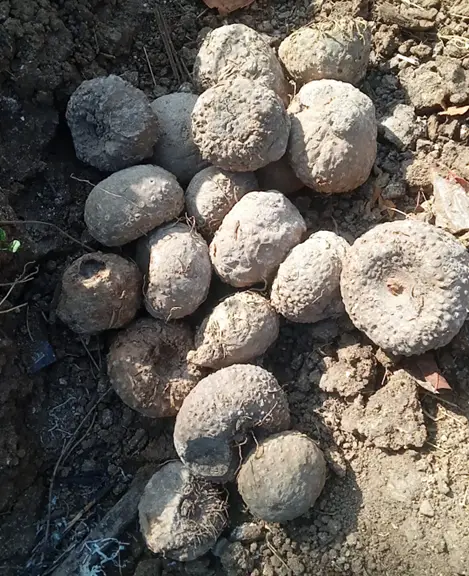
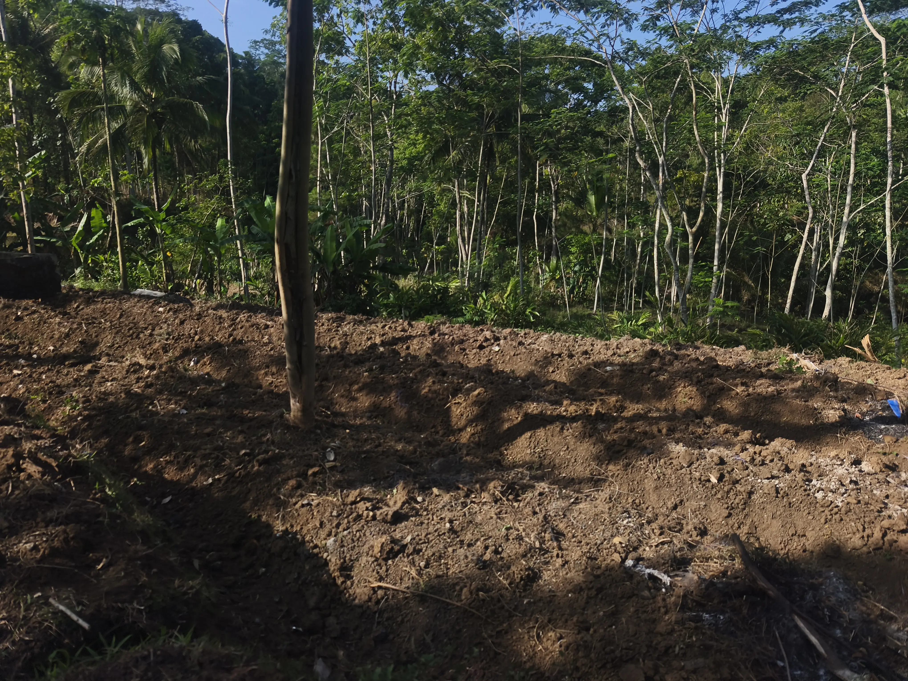
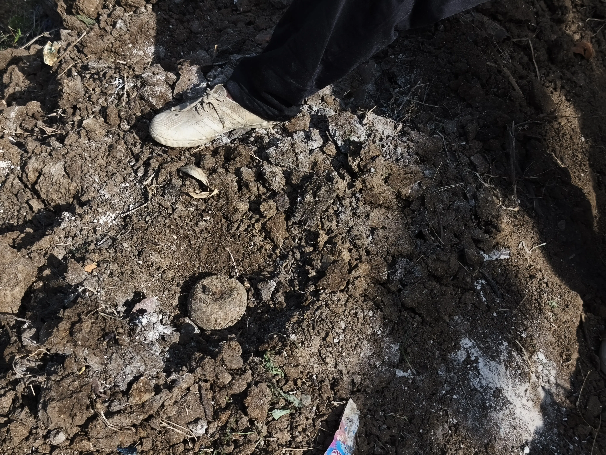
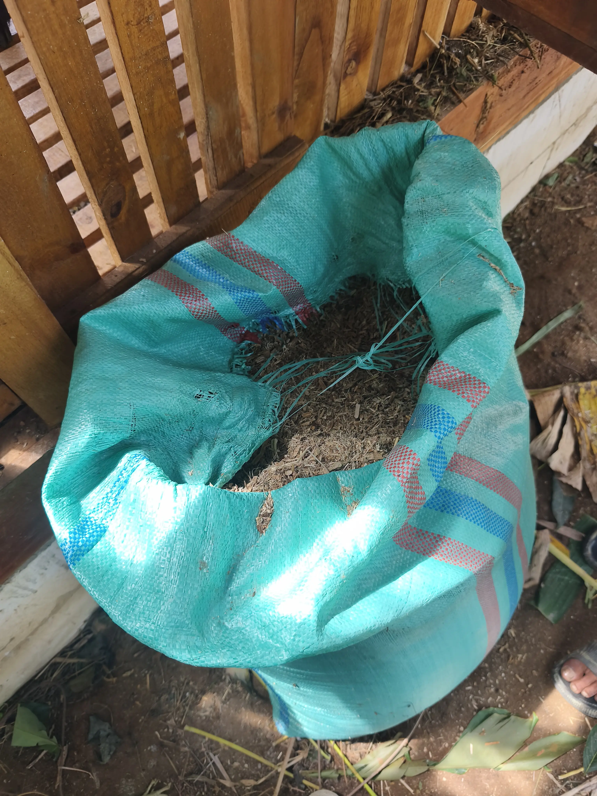

Galeri Dusun
Dokumentasi observasi di Dusun Kori.





Pusat Peternakan Kambing dan Pertanian Porang.
Potensi utama di Dusun Kori sangat didominasi oleh keahlian warganya dalam sektor peternakan kambing dan pertanian porang.
Antusiasme warga terlihat dari bagaimana mereka berinovasi mengelola lahan tegalan dan pakan ternak untuk menghasilkan komoditas dengan nilai ekonomi yang tinggi.
Peternakan kambing di Dusun Kori, seperti yang dikelola oleh Bapak Suwarni di RT 45, menempatkan ternak di dalam model kandang berbahan kayu dengan atap asbes. Metode peternakan yang diterapkan adalah konvensional, didukung dengan pemanfaatan mesin pencacah untuk mengolah asupan pakan yang terdiri dari dedaunan, rumput, serta fermentasi kulit jagung.
Kualitas kambing yang diternakkan sangat bervariasi. Harga jual untuk kambing grade biasa berkisar antara Rp800.000 hingga Rp2.000.000, sedangkan untuk kambing dengan grade terbaik harganya mampu menembus angka Rp40.000.000. Dalam sistem penjualannya, pembeli biasanya datang langsung ke lokasi peternakan untuk memilih kambing.
Bapak Jumair merupakan pelopor pertanian porang di Dusun Kori, yang berawal dari keberhasilan istrinya mencoba menanam dengan modal awal Rp250.000. Karakteristik porang yang toleran terhadap intensitas cahaya rendah (naungan 40%–60%) memungkinkan warga memanfaatkan lahan tegalan yang dipenuhi pepohonan secara optimal melalui sistem tumpangsari tanpa harus merusak vegetasi yang sudah ada. Penanaman biasanya dimulai pada bulan Oktober, sementara untuk bibit katak (bulbil) dimulai pada bulan Agustus.
Pertanian porang ini terbukti efisien karena dari penanaman setengah kilogram bibit dapat menghasilkan hingga tiga kilogram porang. Hasil panen tersebut biasanya didistribusikan langsung oleh petani ke pabrik dengan harga jual di kisaran Rp8.000 hingga Rp13.000 per kilogram. Meskipun menjanjikan, proses budidaya ini masih memiliki kendala utama berupa serangan hama jamur pada batang yang mudah menyebar ke seluruh tanaman dan hingga saat ini belum ditemukan metode pengobatannya.
Dokumentasi observasi di Dusun Kori.



